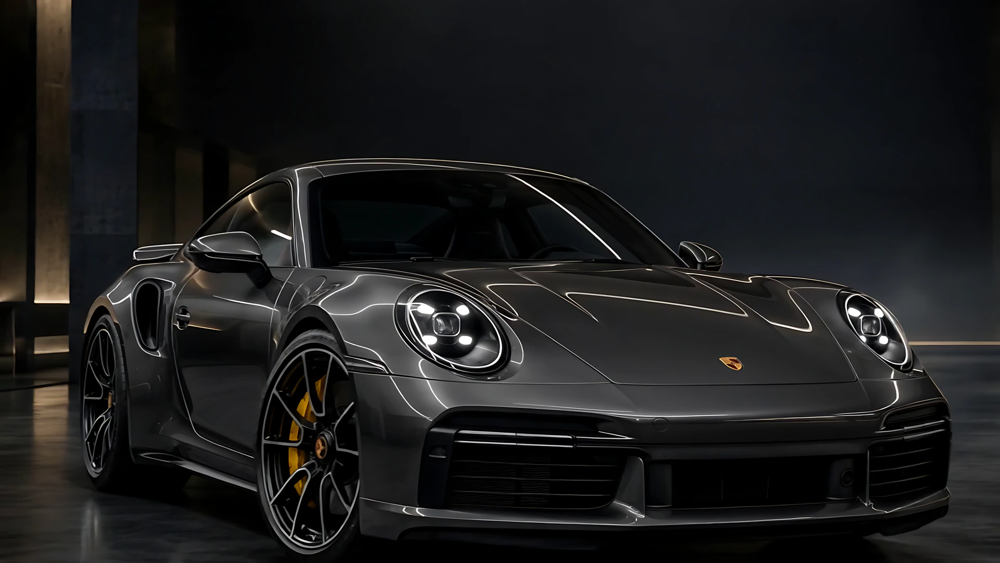

01Exterior
Lavagem técnica
O primeiro toque.
Água, espuma e etapas pensadas para não agredir a pintura. Normalmente é o primeiro passo antes de qualquer outro serviço.
JETCAR Estética Automotiva
Lavagem técnica, polimento, Ceramic Coating, PPF e higienização interna. Uma etapa de cada vez, com a luz certa em cima de cada detalhe.
01Exterior
O primeiro toque.
Água, espuma e etapas pensadas para não agredir a pintura. Normalmente é o primeiro passo antes de qualquer outro serviço.
02Pintura
A luz encontra a pintura.
A luz de inspeção revela as marcas finas no verniz. O polimento trabalha essa camada para recuperar o brilho, conforme o estado da pintura.
Proteção que você não vê. Mas o carro sente.
Sol forte e maresia: perto da praia, a pintura sente primeiro.
03Proteção
Proteção invisível.
Revestimento cerâmico aplicado sobre o verniz depois da preparação da pintura. A equipe explica como fica a manutenção.
Arraste na cena ou use o controle.Arraste para os lados na cena.
04Proteção
Transparente por cima de tudo.
Paint Protection Film: uma película transparente aplicada sobre a pintura, nas áreas do carro que você combinar com a equipe.
05Interior
O cuidado continua por dentro.
Couro, acabamentos, superfícies e detalhes. O tipo de revestimento muda o cuidado, então conte o que tem no seu.

E por dentro também. Cada etapa no lugar, do jeito que o seu carro pedir.
O carro, o que você quer melhorar e os serviços. A mensagem fica pronta para o Direct. Preço e prazo a equipe passa depois de ver o carro.
Endereço
Recife, Pernambuco. A poucas quadras da Praia de Boa Viagem.
Coordenadas: 08°07′14″S · 34°53′58″O
Mapa: dados © OpenStreetMap
Conte como o carro está e o que te incomoda nele. A equipe avalia e indica o que faz sentido.
O Ceramic Coating é um revestimento aplicado sobre a pintura. O PPF é uma película transparente colocada por cima dela. Dá para usar um, outro ou os dois.
Depende do carro, do estado dele e do serviço. A equipe passa valor e prazo depois de avaliar.
Pelo Instagram @jetcarbv. Se quiser, monte o pedido aqui no site e a mensagem vai pronta para o Direct.
Na Rua José Trajano, em Boa Viagem, Recife, a poucas quadras da praia. Abrir no mapa.